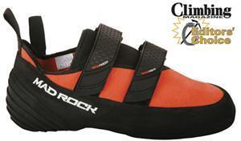

[转寄/推荐][转贴][删除][修改][设置可RE属性][上一篇][返回讨论区][下一篇][回文章][同主题列表][同主题阅读][从这里展开]
发信人: OutdoorAssoc (交大野协官方ID), 信区: outdoor
标 题: 野协清明倾情奉献——攀岩鞋团购
发信站: 饮水思源 (2010年04月02日00:04:57 星期五)
攀岩鞋是攀岩爱好者最先应该考虑购买的装备，一来出于个人卫生的考虑，二来基于提高
攀岩技巧和水平的需要。一双合适的攀岩鞋，能带你走进攀岩的天地，成为敲开攀岩世界
的敲门砖！
而对于刚刚接触攀岩的人，或者想感受攀岩的人来说，购买一双合适的岩鞋是个头痛的问
题，为此，我们野外生存协会推出此次岩鞋团购，献给想要体验攀岩、感受攀岩、加入攀
岩队伍的你们~
本次团购选出三双鞋子，前两双mad rock属于入门级岩鞋，价格相对较低，性价比高~第三
双la sportive，相对价格稍高，适合玩攀岩一段时间的人~
**重要说明**，岩鞋由于其特殊的功能用途，所买鞋子的尺码均需比日常所穿鞋子小1.5到
3码~攀岩鞋由于其特殊需要，也有半码鞋，如41.5码等。
具体如下：
团购报名截止时间：4月4日周日晚24时。
报名方式：协会会员可通过回复协会飞信报名，非协会会员请联系15216716506，管同学（
如有任何疑问，也欢迎联系）
报名内容：短信内容包括：姓名+联系方式+岩鞋型号+岩鞋尺码，或直接与管同学电话联系
~
入门级：
（1）Mad rock flash 220元 “PS：尺码在日常尺码基础上减1.5~2码”
采用专利3-D成型可勾挂式后跟设计；鞋底橡胶采用高附着力的4.2mm Mad Rubber F5，侧
面橡胶为2.0mm Mad Rubber F6；鞋面主体采用舒适透气皮革；模压成型的鞋舌衬垫更加舒
适；无接缝双尼龙搭扣粘带调节使快速穿脱和精确调节更加容易，尤其适合难度路线，传
统及多段攀登。（由于供销商方面问题，此鞋34.5 37 38 41 42码断货，其他码都全，包
括41.5、42.5）
 screen.width - 200){this.width = screen.width - 200}">
|

[转寄/推荐][转贴][删除][修改][设置可RE属性][上一篇][返回讨论区][下一篇][回文章][同主题列表][同主题阅读][从这里展开]